Путинка-блюз. ФестивальВнимание! Фестиваль состоится в парке ЛЕФОРТОВО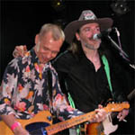 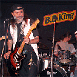 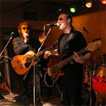 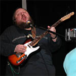 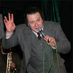 |
|
Свежий воздух, отличный звук, ПОЛНЫЙ ДРАЙВ!!!Программа фестиваля включает в себя полные концертные программы лучших московских групп исполняющих музыку в стиле блюз, фанк, рок'н'ролл, свинг, а так же, в качестве специальных гостей фестиваля выступит группы "Ва Банкъ" и "Неприкасаемые". Паузы между выступлениями заполнит группа бразильских барабанщиков "Маракату", а также девушки в специальных карнавальных костюмах будут танцевать самбу (зажигательно и весело…). Вечером, по окончании основной программы, - праздничный фейерверк. Все это даст возможность сохранять атмосферу праздника на протяжении многих часов. На территории проведения фестиваля будет организована торговля напитками, пивом и барбекю, а в VIP – зоне зрителям будет предложен более широкий ассортимент. Фестиваль пройдет под открытым небом. Это многочасовой фестиваль всех существующих направлений блюза, и около-блюзовой музыки, который планируется проводить ежегодно. В наши дни, когда популярная музыка агрессивно пропагандируется во всех СМИ, фестиваль приобретает немаловажное значение для музыкальной культуры России. Он ставит перед собой задачу развивать и укреплять музыкальные вкусы молодежи и удовлетворить их у взрослой и образованной публики. Блюз не терпит непрофессионализма и фонограмм, бездуховности и показухи, поэтому блюз – это то, из чего произошли практически все современные музыкальные стили от джаза до хип хопа. |
|
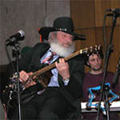 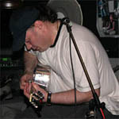 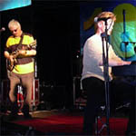 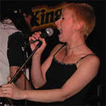 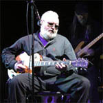 |
Дата и время проведения:Состоится 31 июля в живописном парке "Лефортово". Начало фестиваля в 14.00, окончание официальной программы в 23.00. Далее фейерверк и свободная программа (Open Jam). |
| 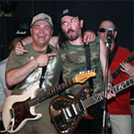 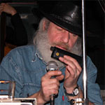 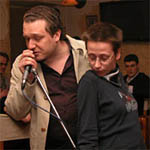 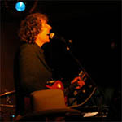 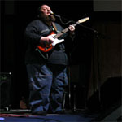 |
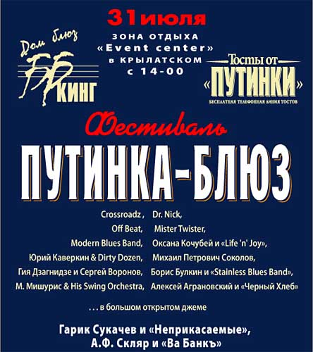
В 23.00 - праздничный фейерверкЗаказ и доставка билетов www.kontramarka.ru Цена билета 450 руб. |
| 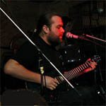 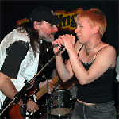 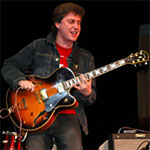 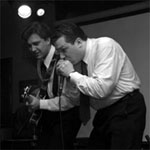 |
|
|
|
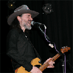 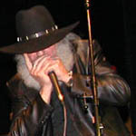 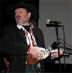 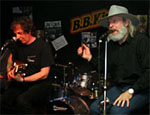 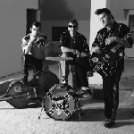 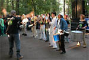 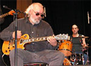 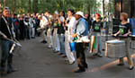 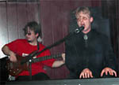 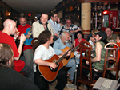 |
{kind=link}